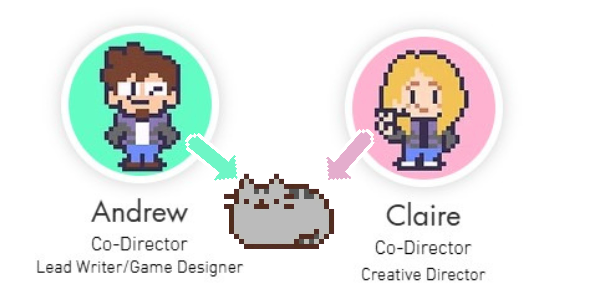
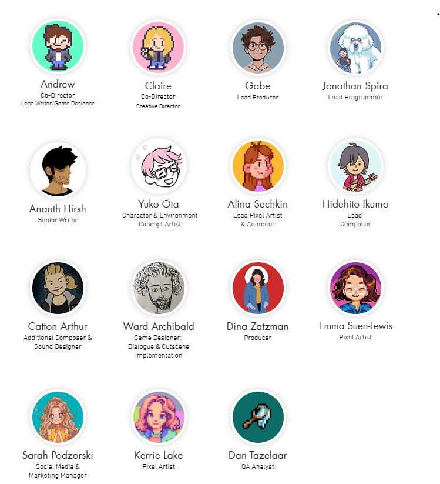

The Dev Team
I want to give credit to those who created Field of Misteria, their vision, passion, and highlight the steps or direction they took the games development.
About NPC Studio
NPC Studio is an indie game development team based in Chicago, founded in 2019 with a vision to build games that resonate with the community. Although Fields of Mistria is their first major title, the core team is lean — around 15 people — supported at times by additional collaborators. Their lineup includes co-directors Claire Belton (Creative Director) and Andrew Duff (Lead Writer / Designer), Gabe as Lead Producer, Jonathan Spira heading programming, Hidehito Ikumo composing music, and artists, animators, writers, QA, and marketing personnel rounding out the roster. Driven by a deep love for the Farm-Sim RPG genre and classic anime visuals, NPC Studio embraces a philosophy of “making games we want to play,” blending nostalgic aesthetics with modern polish, quality-of-life features, and a tight bond with their player community.
The Leads
Claire Belton and Andrew Duff are the co-directors and creative leads behind Fields of Mistria. Long before this game, they were known for creating Pusheen the Cat through their webcomic brand Everyday Cute — a background rooted in character art, illustration, and storytelling.
Their Roles in Fields of Misteria
- Claire Belton acts as Creative Director, overseeing the visual identity, aesthetic consistency, character art, and guiding the artistic vision of the game.
- Andrew Duff serves as Lead Writer & Game Designer, handling narrative direction, dialogue, story arcs, and core game systems in collaboration with Claire and the rest of the team.
- Together, they co-design the game, make high-level decisions, and ensure that gameplay, story, visuals, and mechanics cohere in harmony.
What Inspired Them to Create the Game
Claire Belton and Andrew Duff drew inspiration from their love of classic farming and life-sim games such as Harvest Moon, Stardew Valley, and Rune Factory, as well as the vibrant charm of 90s anime like Sailor Moon. Coming from a background in character design and storytelling with their creation of Pusheen, they wanted to craft a game that combined cozy farming and exploration with expressive characters and heartfelt relationships. Their goal was simple: to make the kind of game they themselves had always wished to play, blending nostalgia with fresh ideas and community input to create a new but familiar world in Fields of Mistria.
Key Memebers and Their Core Roles
Beyond Claire Belton and Andrew Duff, Fields of Mistria has been shaped by a talented team whose skills brought the game’s world to life:
- Gabe — Lead Producer: Gabe ensures the project runs smoothly, keeping development on track and balancing creative vision with deadlines.
- Jonathan Spira — Lead Programmer: Jonathan is responsible for the systems under the hood, turning design ideas into a functional, polished experience. His work ensures farming, exploration, and relationship systems feel responsive and cohesive.
- Ananth Hirsh — Senior Writer: Ananth enriches Mistria’s cast through dialogue and narrative layers, giving each character a voice that feels alive and memorable.
- Yuko Ota — Concept Artist: Yuko’s character and environment designs helped define the look of Mistria, blending 90s anime nostalgia with a fresh, inviting style.
- Alina Sechkin — Lead Pixel Artist & Animator: Alina transforms concept art into expressive sprites and animations, breathing charm and detail into villagers and the world they inhabit.
- Hidehito Ikumo — Lead Composer: Hidehito’s music sets the tone of the game, from peaceful mornings on the farm to adventurous journeys in caves, ensuring the world feels vibrant and alive.
- Catton Arthur — Composer & Sound Design: Catton supports the soundtrack with additional compositions and creates the soundscapes that make everyday actions—like fishing or farming—immersive.
- Ward Archibald — Game Designe: Ward focuses on dialogue and cutscene implementation, making story beats and character interactions flow naturally within the game.
- Dina Zatzman — Producer: Dina provides additional production support, coordinating efforts across the team and helping ensure development milestones are met.
Alongside these leads, Fields of Mistria came to life thanks to the dedication of many other talented contributors. Artists such as Emma Suen-Lewis, Sarah Podzorski, and Kerrie Lake helped refine the game’s visual style, while Dan Tazelaar and others supported development and quality assurance. Every member of NPC Studio — past and present — played a part in shaping Mistria’s world, ensuring that each detail, from the smallest sprite to the smoothest interaction, carried the team’s passion.
More Info:
For more information on Claire and Andrew and their team, I have provided links to their wikis and a link to the Field of Misteria site page, as well as to Claire’s and Andrew’s 'Everyday Cute' tumblr page to check out their work: